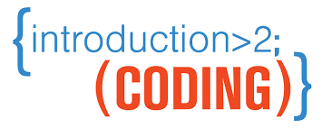

You will find some quick way to work on Github.
First you will need to create an account on Git Hub. It's free and easy to do so.
Once you have an account you will need to create a new repo. Go to the left corrner of your screen adn click 'New', name your repo then click 'create repository' This will create your first repo.
Make sure that you coppy the steps that they give you on your page you will need them latter. On your laptop create a folder for this project then open up Sublime Text and create a README.md Save it in the folder you made for this project.
Next you are going to add your README.md file by puting 'git add README.md in terminal.
click enter then 'git commit -am "first commit" click enter next 'git branch -M main' click enter.
Middel part of my web site
Once you have the README.md added then you will commit this step by typing git commit -am first commit
Then you will tell it what branch it is going to with the code git branch -M main
Next you will need to look back at the code we copied form git hub when we created the repo first and find the long https://github.com/EmmaHardacre/First-homework-assginment-.git and copy it, then type git remote add origin
If there are no errors then go back to github page and reload it and you should see your documents there
To add in the indext.html
This section will show you how to create athe indext.html page that you will need. This page is the page that will be the web site with all the code on it.
Once this is done you will then need to create another page in sublime text save this as indext.html
Remember all these files will be saved in your folder on your desktop for this project. >
Once your documents are up on git hub you can then type all the code in sublime text, and you will just have to make sure to push all your changes on to git hub